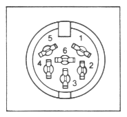

| NUMBER | DEVICE |
|---|---|
| 4 or 5 | VIC-1525 GRAPHIC PRINTER |
| 8 | VIC-1541 DISK DRIVE |
Other device addresses are possible. Each device has its own address. Certain devices (like the Commodore 64 printer) provide a choice between two addresses for the convenience of the user.
The SECONDARY ADDRESS is to let the Commodore 64 transmit setup information to a device. For example, to OPEN a connection on the bus to the printer, and have it print in UPPER/LOWER case, use the following
OPEN 1,4,7where,
There are 6 lines used in serial bus operations - input and 3 output. The 3 input lines bring data, control, and timing signals into the Commodore 64. The 3 output lines send data, control, and timing signals from the Commodore 64 to external devices on the serial bus.
| Pin | Type |  |
|---|---|---|
| 1 | /SERIAL SRQ IN | |
| 2 | GND | |
| 3 | SERIAL ATN OUT | |
| 4 | SERIAL CLK IN/OUT | |
| 5 | SERIAL DATA IN/OUT | |
| 6 | /RESET |
| This page has been created by Sami Rautiainen. | |
| Read the small print. | Last updated November 06, 1998. |